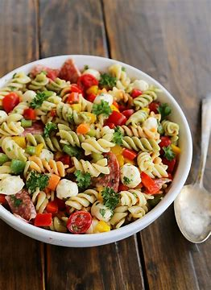

Embark on a culinary journey to Italy with our Creamy Garlic Parmesan Pasta recipe, a delectable dish that combines simplicity with luxurious flavor. This indulgent pasta creation boasts a velvety sauce infused with the rich essence of garlic and the sharp tang of Parmesan cheese, enveloping each strand of pasta in a comforting embrace. Whether you're seeking a quick weeknight meal or planning an elegant dinner party, this recipe is sure to impress even the most discerning palates.
To begin, cook your favorite pasta according to package instructions until al dente, then set it aside while you prepare the luscious sauce. In a skillet, sauté minced garlic in butter until fragrant, releasing its irresistible aroma and infusing the kitchen with warmth. Next, add heavy cream to the skillet, allowing it to simmer gently until it thickens and becomes velvety smooth. As the sauce simmers, sprinkle in a generous amount of freshly grated Parmesan cheese, stirring continuously until it melts into the cream, creating a luxurious texture and adding a bold, savory flavor.